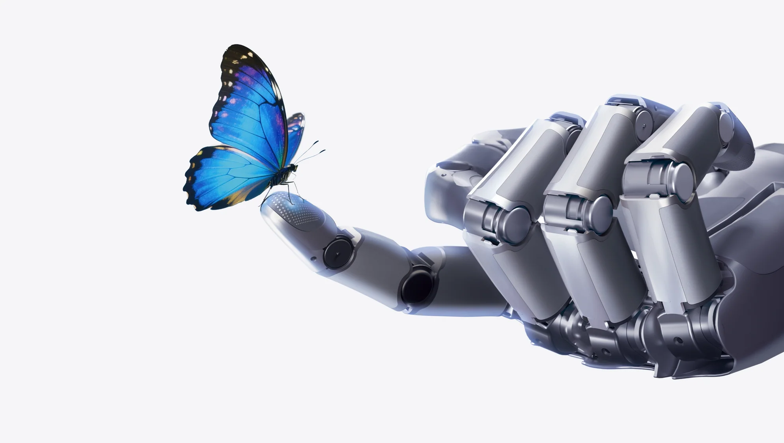

El futuro de la interacción está aquí.
Conoce a Sharpa, un robot humanoide de última generación diseñado para conectar a las personas con la inteligencia artificial de forma natural, amigable y segura.
Explorar su tecnología
Diseñado para Impresionar
👁️ Visión Estereoscópica
Equipado con un sistema de doble cámara en su cabeza que le permite percibir profundidad, reconocer rostros y comprender el entorno en 3D.
🤖 Comunicación No Verbal
Sus avanzados brazos mecánicos son expresivos. Puede saludar, gesticular y señalar, haciendo que la conversación sea humana.
🤝 Diseño Amigable
Su estética blanca y minimalista genera confianza y empatía, alejándose del aspecto frío de la robótica industrial tradicional.
🧠 IA Conversacional
Impulsado por algoritmos de procesamiento de lenguaje natural, puede mantener diálogos fluidos y asistir a usuarios en tiempo real.
Anatomía de Sharpa
🧠 Sistema de Control
Actúa como el cerebro. Recibe las instrucciones, procesa los algoritmos y coordina a los demás sistemas.
👁️ Sistema de Sensado
Son los sentidos. Capturan la información del entorno tridimensional y la envían al sistema de control.
💪 Sistema de Actuación
Son los músculos. Transforman la energía eléctrica en el movimiento físico de los brazos.
⚙️ Sistema Mecánico
Es el esqueleto. La estructura física que protege los componentes internos y da forma al robot.
¿Qué hay dentro?
Desglose técnico de los hardwares y softwares que componen la estructura
Sistema de Control
- Placa Madre: Computadora embebida (ej. Nvidia Jetson) para procesamiento central.
- Módulo IA: Chip dedicado para procesar Lenguaje Natural y modelos de visión.
- ROS / Firmware: Sistema Operativo de Robótica que coordina hardware y software.
Sistema de Sensado
- Cámaras RGB-D: Par de cámaras que capturan color (RGB) y mapa de profundidad (D).
- Encoders: Sensores en articulaciones que miden el ángulo exacto de los brazos.
- IMU: Sensor inercial que le dice al cerebro si el robot está nivelado o inclinado.
Sistema de Actuación
- Servomotores: Motores de alta precisión en hombros y codos que controlan fuerza y posición.
- Drivers (H): Placas que amplifican la señal del cerebro para mover los motores con fuerza.
- Act. Lineales: Sistemas para movimientos finos de cuello o manos articuladas.
Sistema Mecánico
- Chasis: Esqueleto interno de aluminio CNC o plásticos de alta resistencia.
- Transmisión: Engranajes, poleas y correas dentadas que conectan motores con articulaciones.
- Carcasa: "Piel" blanca diseñada en CAD e impresa en 3D para protección y estética.
El Cerebro CraftNet
No actúa por reflejo simple. Sharpa utiliza una red neuronal multimodal estructurada en capas de velocidad, desde el pensamiento profundo hasta los reflejos instintivos.

System 2: Reasoning
~1 Hz (Lento)Es el "raciocinio". Integra el Lenguaje y la Visión. Piensa y decide la "Intención Física" general.
System 1: Motion
~10 Hz (Medio)Es el "cerebro motor". Traduce la decisión en "Acciones Gruesas". Coordina a gran velocidad qué músculos deben moverse.
System 0: Interaction
~100 Hz (Ultra rápido)Son los "reflejos". Genera "Acciones Finas" para corregir el movimiento instantáneamente si hay resistencia.
Sharpa en Acción
Observa cómo la arquitectura CraftNet cobra vida en el mundo real a través de sus interacciones.
Innovación Latinoamericana
Sharpa es mucho más que un robot; es el reflejo del talento tecnológico de Perú y América Latina. Desarrollado por la startup homónima, este proyecto fusiona la ingeniería de hardware de punta con el desarrollo avanzado de software de IA.
Desde sus laboratorios, el equipo de Sharpa está redefiniendo cómo las empresas y el público en general interactúan con la tecnología, llevando la robótica social desde la ciencia ficción hacia la vida cotidiana.